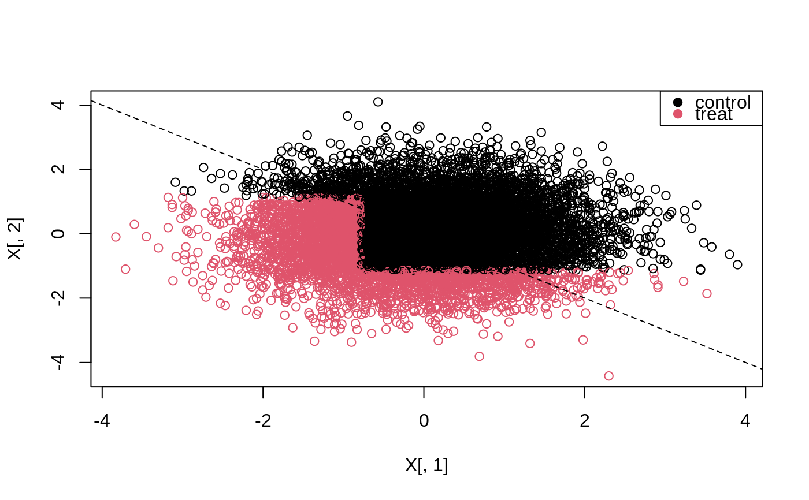

Finds the optimal (maximizing the sum of rewards) depth k tree by exhaustive search. If the optimal action is the same in both the left and right leaf of a node, the node is pruned.
policy_tree( X, Gamma, depth = 2, split.step = 1, min.node.size = 1, verbose = TRUE )
| X | The covariates used. Dimension \(N*p\) where \(p\) is the number of features. |
|---|---|
| Gamma | The rewards for each action. Dimension \(N*d\) where \(d\) is the number of actions. |
| depth | The depth of the fitted tree. Default is 2. |
| split.step | An optional approximation parameter, the number of possible splits to consider when performing tree search. split.step = 1 (default) considers every possible split, split.step = 10 considers splitting at every 10'th sample and may yield a substantial speedup for dense features. Manually rounding or re-encoding continuous covariates with very high cardinality in a problem specific manner allows for finer-grained control of the accuracy/runtime tradeoff and may in some cases be the preferred approach. |
| min.node.size | An integer indicating the smallest terminal node size permitted. Default is 1. |
| verbose | Give verbose output. Default is TRUE. |
A policy_tree object.
Exact tree search is intended as a way to find shallow (i.e. depth 2 or 3) globally optimal tree-based polices on datasets of "moderate" size. The amortized runtime of exact tree search is \(O(p^k n^k (log n + d) + pnlog n)\) where p is the number of features, n the number of distinct observations, d the number of treatments, and k >= 1 the tree depth. Due to the exponents in this expression, exact tree search will not scale to datasets of arbitrary size.
As an example, the runtime of a depth two tree scales quadratically with the number of observations, implying
that doubling the number of samples will quadruple the runtime.
n refers to the number of distinct observations, substantial speedups can be gained
when the features are discrete (with all binary features, the runtime will be ~ linear in n),
and it is therefore beneficial to round down/re-encode very dense data to a lower cardinality
(the optional parameter split.step emulates this, though rounding/re-encoding allow for finer-grained control).
Athey, Susan, and Stefan Wager. "Policy Learning With Observational Data." Econometrica 89.1 (2021): 133-161.
Sverdrup, Erik, Ayush Kanodia, Zhengyuan Zhou, Susan Athey, and Stefan Wager. "policytree: Policy learning via doubly robust empirical welfare maximization over trees." Journal of Open Source Software 5, no. 50 (2020): 2232.
Zhou, Zhengyuan, Susan Athey, and Stefan Wager. "Offline multi-action policy learning: Generalization and optimization." arXiv preprint arXiv:1810.04778 (2018).
hybrid_policy_tree for building deeper trees.
# \donttest{ # Fit a depth two tree on doubly robust treatment effect estimates from a causal forest. n <- 10000 p <- 10 # Discretizing continuous covariates decreases runtime. X <- round(matrix(rnorm(n * p), n, p), 2) colnames(X) <- make.names(1:p) W <- rbinom(n, 1, 1 / (1 + exp(X[, 3]))) tau <- 1 / (1 + exp((X[, 1] + X[, 2]) / 2)) - 0.5 Y <- X[, 3] + W * tau + rnorm(n) c.forest <- grf::causal_forest(X, Y, W) dr.scores <- double_robust_scores(c.forest) tree <- policy_tree(X, dr.scores, 2) tree#> policy_tree object #> Tree depth: 2 #> Actions: 1: control 2: treated #> Variable splits: #> (1) split_variable: X1 split_value: -0.79 #> (2) split_variable: X2 split_value: 1.14 #> (4) * action: 2 #> (5) * action: 1 #> (3) split_variable: X2 split_value: -1.14 #> (6) * action: 2 #> (7) * action: 1# Predict the leaf assigned to each sample. node.id <- predict(tree, X, type = "node.id") # Can be reshaped to a list of samples per leaf node with `split`. samples.per.leaf <- split(1:n, node.id) # The value of all arms (along with SEs) by each leaf node. values <- aggregate(dr.scores, by = list(leaf.node = node.id), FUN = function(x) c(mean = mean(x), se = sd(x) / sqrt(length(x)))) print(values, digits = 2)#> leaf.node control.mean control.se treated.mean treated.se #> 1 4 -0.068 0.046 0.203 0.044 #> 2 5 0.166 0.105 -0.120 0.093 #> 3 6 0.122 0.055 0.260 0.058 #> 4 7 0.048 0.022 -0.082 0.022# Take cost of treatment into account by offsetting the objective # with an estimate of the average treatment effect. # See section 5.1 in Athey and Wager (2021) for more details, including # suggestions on using cross-validation to assess the accuracy of the learned policy. ate <- grf::average_treatment_effect(c.forest) cost.offset <- ate[["estimate"]] tree.cost <- policy_tree(X, dr.scores - cost.offset, 2) # If there are too many covariates to make tree search computationally feasible, # one can consider for example only the top 5 features according to GRF's variable importance. var.imp <- grf::variable_importance(c.forest) top.5 <- order(var.imp, decreasing = TRUE)[1:5] tree.top5 <- policy_tree(X[, top.5], dr.scores, 2, split.step = 50) # }